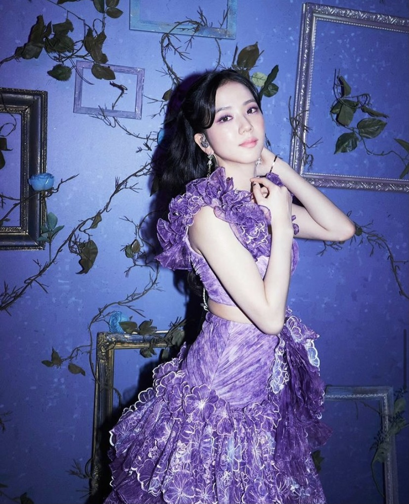

Kim Ji Soo

Stage name: Jisoo
Birth name: Kim Ji Soo
Nicknames: Chi Choo, Jichu
Position: Lead vocalist, Visual
Birthday: January 3, 1995
Zodiac sign: Capricorn
Birthplace: Gunpo, South Korea
Height: 5'3.75" (162 cm)
Instgram: @sooyaaa__
Weibo: sooyaaa__
Facts:
- She was born in Gunpo, a city in the province of Gyeonggi, South Korea
- She trained for 5 years
- She was the third member to be revealed
- She can speak Korean, Japanese, basic Chinese, and basic English
- She understands English very well but is embarrassed to speak it
- She can play the Korean drum and piano
- She has a 4D personality
- She has a dog named Dalgom
- She has a white belt in taekwondo